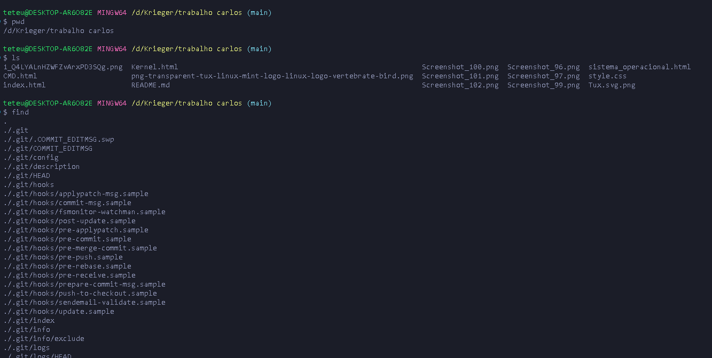
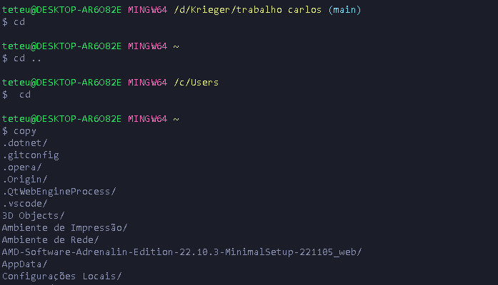
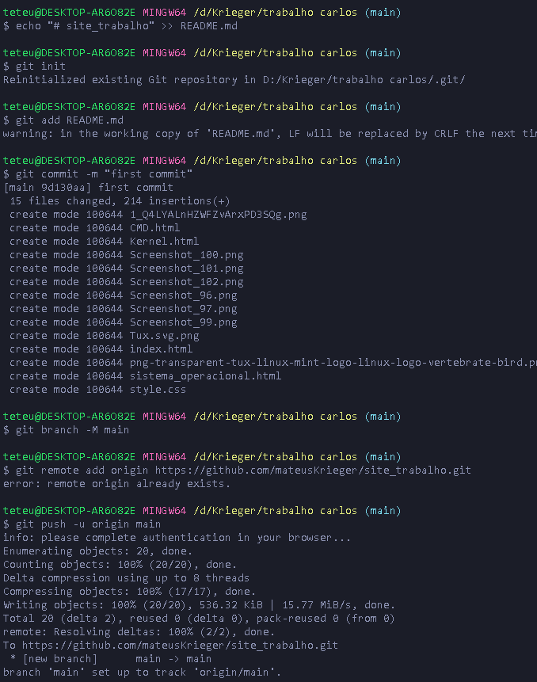

ls: lista todos os arquivos e pastas dentro de um diretório.
cat: lista os conteúdos de um arquivo de texto na saída padrão (sdout).
cp: copia arquivos do diretório atual para uma pasta diferente.
mv: pode ser usado para mover ou renomear arquivos.
mkdir: cria um novo diretório.
rm: remove arquivos e diretórios.
sudo: executa um comando como superusuário.
find: para buscar arquivos em diretórios.


O que é um sistema de versionamento?
Um sistema de versionamento, como o Git, é uma ferramenta que permite controlar e gerenciar as alterações feitas em arquivos ao longo do tempo, possibilitando acompanhar o histórico de modificações, reverter para versões anteriores, colaborar com outras pessoas em projetos de desenvolvimento de software, entre outras funcionalidades.

O que é um repositorio no GITHUB?
Um repositório é a base do GitHub. É onde você guarda seu código e arquivos, mantendo um registro de todas as revisões feitas em cada arquivo ao longo do tempo. Esses repositórios podem ser compartilhados com vários colaboradores e têm a opção de serem públicos, acessíveis a todos, ou privados, acessíveis somente para quem é autorizado.